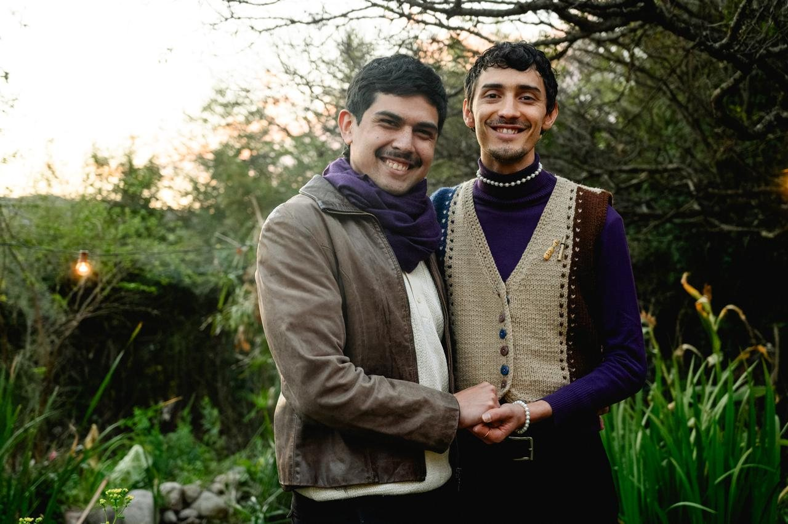
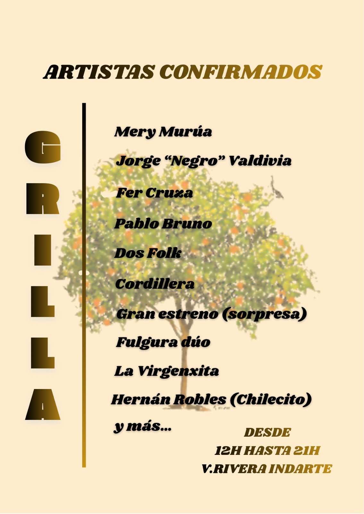

La Peña Fulgura llega a su tercera edición en Villa Rivera Indarte
El domingo 15 de noviembre, de 12 a 21, Fulgura Dúo organiza una jornada de música en vivo todo el día, amigxs, comidas ricas y encuentro, para grabar su primer EP.

La tercera edición de la Peña Fulgura será el domingo 15 de noviembre, de 12 a 21, en una casa familiar de Villa Rivera Indarte. La organiza Fulgura Dúo, que con lo recaudado busca completar el dinero para grabar su primer EP.
Fulgura Dúo está formado por Santiago Cabral Azcotia y Lau, que además son pareja. Se conocieron guitarreando en el mismo patio donde hoy se hace la peña, y fueron sus amistades las que los animaron a salir a tocar.

La grilla confirmada incluye a Mery Murúa, Jorge “Negro” Valdivia, Fer Cruza, Pablo Bruno, Dos Folk, Cordillera, Fulgura Dúo, La Virgenxita y Hernán Robles (Chilecito). “Son artistas que realmente son referentes para nosotros, que admiramos y que ven la música con profundidad”, contó Santiago Cabral Azcotia, organizador e integrante de Fulgura Dúo. Todos tocan de manera solidaria.

Habrá feria, sorteo y comida casera, con opciones vegetarianas, veganas y sin TACC, a precios populares. Habrá agua caliente gratis para el mate. La invitación es llevar una manta o una reposera y pasar el día en el patio.
Las entradas se consiguen por WhatsApp con San (351 225 7532) o con Lau (385 621 3830). La dirección exacta se pasa al adquirir la entrada.
Dónde y cuándo: domingo 15 de noviembre, de 12 a 21 · Villa Rivera Indarte · Entradas: 351 225 7532 (San) y 385 621 3830 (Lau) · Instagram: @fulguraduo.